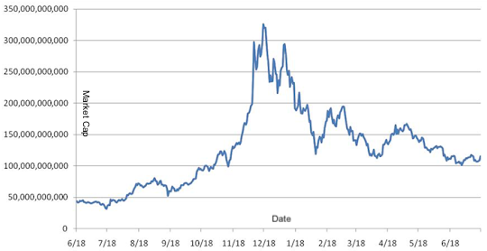

Bitcoin Vindication
Since its peak last winter I've kept my eye on the price of bitcoin. Then and now I've been calling the thing a bubble. I have no comment on the technological side of bitcoin. The problems with everyday transactions can be overcome. Though I am concerned about the carbon footprint of perpetually running so many computers for hashing. The current financial systems world wide heavily rely on computation but going dollar for dollar the crypto-systems are more computationally intensive, more wasteful of electric. These concerns can be overcome.
When I first wrote about bitcoin I didn't bring up market capitalization. At the time I didn't have enough historical data. Market capitalization is a simple concept. Say you have X shares in my company, LuTech, and each share is worth Y dollars. The market capitalization of LuTech is X*Y.
Let's make this concrete:
| Shares | Price | Market Cap |
|---|---|---|
| 10 | $75 | $750 |
| 30 | $3,000 | $90,000 |
| 50 | $1,500 | $75,000 |
This is an exaggeration but it makes a point. The shares keep increasing. The price jumps up by 4,000% and then goes down by 50%. Meanwhile the market capitalization between 30 and 50 shares loses $15,000! To where does the money vanish?
Let's say that the shares remain the same throughout, 10 shares, with the same price changes. It's clear who loses the money. The person who bought in at $3,000 and sells at $1,500 loses the money. Now when the shares are increasing it can become unclear who loses the money since in my toy example its not clear if the next twenty are sold at the current or previous price. If the next 20 shares are sold at $3,000 then the people buying in are losing money. If the next 20 shares are sold at $1,500 then the people who bought in when the market was high are losing money.
In the real world things are not so simple since trades are occurring continuously. Still the point is made, someone loses money. When the market cap goes down while the shares go up, ceteris paribus, someone has lost money. Now let us turn to the bitcoin phenomenon of last winter.
This chart was created with data from coinmarketcap.com. It plots the market capitalization from last year before the price surge to now. From 12/18/2017 to now the market cap decreased by about two thirds! Who lost that money?Theoretically no one lost that money as long as everyone who bought in holds out until the price rises to compensate them. In reality that's not what happens. Every giant market has people entering and exiting all the time.
As I've said before such speculation sometimes lays down the infrastructure necessary to make a technology work. It doesn't always but I suspect it might have for bitcoin. Despite that feeling I'm not convinced that what we saw last winter was anything but a speculative frenzy. I am just thankful that people were prevented from taking out debt to speculate. If the mania wasn't tamed that two thirds loss could have spilled over into the rest of the economy.